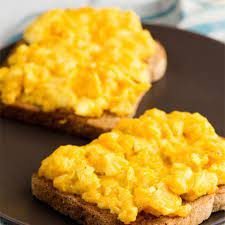

Eggs with Cheese

Description
This is my favorite recipe and it has eggs and cheese and all the best stuff.
Ingredients
The ingredients are pretty standard. Please see below.
- Organic & Pasture-Raised Eggs
- Butter
- Salt
- Pepper
- Cheese
Instructions to make
- Heat pan with butter on medium-high heat
- When hot, crack eggs into pan
- Add Salt and Pepper to your liking
- Add cheese on top and constantly stir until cooked